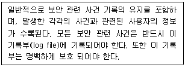
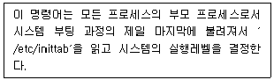
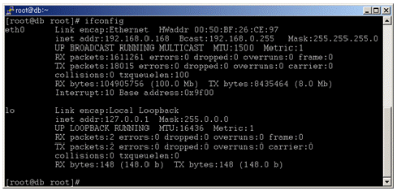
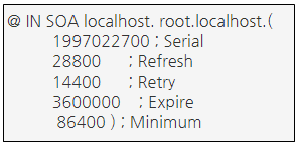
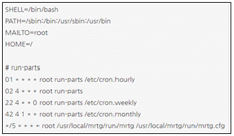
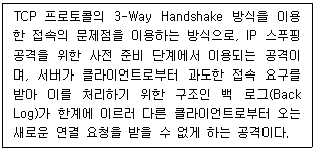
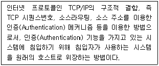
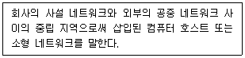
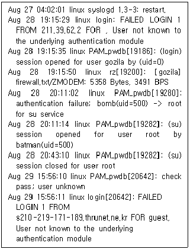
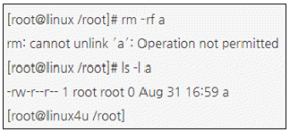

인터넷보안전문가-2급 (2022-10-30 기출문제)
1과목: 정보보호개론
1. 암호 프로토콜 서비스에 대한 설명 중 옳지 않은 것은?
- 비밀성 : 자료 유출의 방지
- 접근제어 : 프로그램 상의 오류가 발생하지 않도록 방지
- 무결성 : 메시지의 변조를 방지
- 부인봉쇄 : 송수신 사실의 부정 방지
(정답률: 50%)

2. 5명의 사용자가 대칭키(Symmetric Key)를 사용하여 주고받는 메시지를 암호화하기 위해서 필요한 키의 총 개수는?
- 2개
- 5개
- 7개
- 10개
(정답률: 52%)
3. Deadlock(교착상태) 에 관한 설명으로 가장 올바른 것은?
- 여러 개의 프로세스가 자원의 사용을 위해 경쟁한다.
- 이미 다른 프로세스가 사용하고 있는 자원을 사용하려 한다.
- 두 프로세스가 순서대로 자원을 사용한다.
- 두개 이상의 프로세스가 서로 상대방이 사용하고 있는 자원을 기다린다.
(정답률: 35%)
4. IPSec을 위한 보안 연계(Security Association)가 포함하는 파라미터로 옳지 않은 것은?
- IPSec 프로토콜 모드(터널, 트랜스포트)
- 인증 알고리즘, 인증키, 수명 등의 AH 관련 정보
- 암호 알고리즘, 암호키, 수명 등의 ESP 관련 정보
- 발신지 IP Address와 목적지 IP Address
(정답률: 34%)
5. 네트워크 또는 응용을 위한 보안 대책으로 옳지 않은 것은?
- SSL - 종단간 보안
- PGP - 안전한 전자메일
- Single Sign On - 무선 링크 보안
- Kerboros - 사용자 인증
(정답률: 40%)
6. 이산대수 문제에 바탕을 두며 인증메시지에 비밀 세션키를 포함하여 전달할 필요가 없고 공개키 암호화 방식의 시초가 된 키 분배 알고리즘은?
- RSA 알고리즘
- DSA 알고리즘
- MD-5 해쉬 알고리즘
- Diffie-Hellman 알고리즘
(정답률: 46%)
7. DES(Data Encryption Standard)에 대한 설명 중 옳지 않은 것은?
- 1970년대 초 IBM이 개발한 알고리즘이다.
- 2048 비트까지의 가변 키 크기가 지원되고 있다.
- 미국표준기술연구소(NIST)에 의해 암호화 표준으로 결정됐다.
- 암호화 방식의 전자 코드 북과 암호 피드백으로 이루어졌다.
(정답률: 29%)
8. SEED(128 비트 블록 암호 알고리즘)의 특성으로 옳지 않은 것은?
- 데이터 처리단위는 8, 16, 32 비트 모두 가능하다.
- 암ㆍ복호화 방식은 공개키 암호화 방식이다.
- 입출력의 크기는 128 비트이다.
- 라운드의 수는 16 라운드이다.
(정답률: 39%)
9. 다음 내용은 보안 운영체제의 특정한 보안기능에 대해 설명한 것이다. 어떤 기능인가?

- 사용자 식별 또는 인증
- 감사 및 감사 기록
- 강제적/임의적 접근 통제
- 침입탐지
(정답률: 46%)
10. 안전한 Linux Server를 구축하기 위한 방법으로 옳지 않은 것은?
- 불필요한 데몬을 제거한다.
- 불필요한 Setuid 프로그램을 제거한다.
- 시스템의 무결성을 주기적으로 검사한다.
- 무결성을 검사하기 위한 데이터베이스를 추후 액세스가 용이하게 검사할 시스템에 저장하는 것이 좋다.
(정답률: 44%)
2과목: 운영체제
11. 아파치 데몬으로 웹서버를 운영하고자 할 때 반드시 선택해야하는 데몬은?
- httpd
- dhcpd
- webd
- mysqld
(정답률: 50%)
12. 다음 명령어 중에서 데몬들이 커널상에서 작동되고 있는지 확인하기 위해 사용하는 것은?
- domon
- cs
- cp
- ps
(정답률: 42%)
13. 다음은 어떤 명령어에 대한 설명인가?

- runlevel
- init
- nice
- halt
(정답률: 42%)
14. Linux에서 현재 사용하고 있는 쉘(Shell)을 확인해 보기 위한 명령어는?
- echo $SHELL
- vi $SHELL
- echo &SHELL
- vi &SHELL
(정답률: 53%)
15. 커널의 대표적인 기능으로 옳지 않은 것은?
- 파일 관리
- 기억장치 관리
- 명령어 처리
- 프로세스 관리
(정답률: 31%)
16. Linux 시스템 명령어 중 디스크의 용량을 확인하는 명령어는?
- cd
- df
- cp
- mount
(정답률: 50%)
17. Linux의 기본 명령어들이 포함되어 있는 디렉터리는?
- /var
- /usr
- /bin
- /etc
(정답률: 44%)
18. DNS(Domain Name System) 서버를 처음 설치하고 가장 먼저 만들어야 하는 데이터베이스 레코드는?
- CNAME(Canonical Name)
- HINFO(Host Information)
- PTR(Pointer)
- SOA(Start Of Authority)
(정답률: 38%)
19. 어떤 파일에서 처음부터 끝까지 문자열 ′her′를 문자열 ′his′로 치환하되, 치환하기 전에 사용자에게 확인하여 사용자가 허락하면(y를 입력하면) 치환하고, 사용자가 허용하지 않으면 치환하지 않도록 하는 vi 명령어는?
- :1,$s/her/his/gc
- :1,$r/her/his/gc
- :1,$s/his/her/g
- :1,$r/his/her/g
(정답률: 24%)
20. Windows Server의 DNS 서비스 설정에 관한 설명으로 옳지 않은 것은?
- 정방향 조회 영역 설정 후 반드시 역방향 조회 영역을 설정해 주어야 한다.
- Windows Server는 고정 IP Address를 가져야 한다.
- Administrator 권한으로 설정해야 한다.
- 책임자 이메일 주소의 at(@)은 마침표(.)로 대체된다.
(정답률: 14%)
21. Linux에서 ′ls -al′ 명령에 의하여 출력되는 정보로 옳지 않은 것은?
- 파일의 접근허가 모드
- 파일 이름
- 소유자명, 그룹명
- 파일의 소유권이 변경된 시간
(정답률: 37%)
22. Windows Server에서 제공하고 있는 VPN 프로토콜인 L2TP(Layer Two Tunneling Protocol)에 대한 설명 중 옳지 않은 것은?
- IP 기반의 네트워크에서만 사용가능하다.
- 헤드 압축을 지원한다.
- 터널 인증을 지원한다.
- IPsec 알고리즘을 이용하여 암호화 한다.
(정답률: 29%)
23. Windows Server에서 감사정책을 설정하고 기록을 남길 수 있는 그룹은?
- Administrators
- Security Operators
- Backup Operators
- Audit Operators
(정답률: 31%)
24. 아래는 Linux 시스템의 ifconfig 실행 결과이다. 옳지 않은 것은?

- eth0의 OUI 코드는 26:CE:97 이다.
- IP Address는 192.168.0.168 이다.
- eth0가 활성화된 후 현재까지 충돌된 패킷이 없다.
- lo는 Loopback 주소를 의미한다.
(정답률: 54%)
25. Linux 시스템 파일의 설명으로 옳지 않은 것은?
- /etc/passwd - 사용자 정보 파일
- /etc/fstab - 시스템이 시작될 때 자동으로 마운트 되는 파일 시스템 목록
- /etc/motd - 텔넷 로그인 전 나타낼 메시지
- /etc/shadow - 패스워드 파일
(정답률: 39%)
26. Linux에서 사용자의 ′su′ 명령어 시도 기록을 볼 수 있는 로그는?
- /var/log/secure
- /var/log/messages
- /var/log/wtmp
- /var/log/lastlog
(정답률: 28%)
27. 아래는 DNS Zone 파일의 SOA 레코드 내용이다. SOA 레코드의 내용을 보면 5 개의 숫자 값을 갖는데, 그 중 두 번째 값인 Refresh 값의 역할은?

- Primary 서버와 Secondary 서버가 동기화 하게 되는 기간이다.
- Zone 내용이 다른 DNS 서버의 Cache 안에서 살아남을 기간이다.
- Zone 내용이 다른 DNS 서버 안에서 Refresh 될 기간이다.
- Zone 내용이 Zone 파일을 갖고 있는 서버 내에서 자동 Refresh 되는 기간이다.
(정답률: 22%)
28. 다음은 cron 데몬의 설정파일인 crontab 파일의 내용이다. 이 파일의 내용을 보면 마지막 라인에 ′*/5′ 라고 표현된 부분이 있는데 이것의 의미는?

- 5시간마다 실행
- 5분마다 실행
- 5초마다 실행
- 하루 중 오전 5시와 오후 5시에 실행
(정답률: 32%)
29. Linux 콘솔 상에서 네트워크 어댑터 ′eth0′을 ′ifconfig′ 명령어로 ′192.168.1.1′ 이라는 주소로 사용하고 싶을 때 올바른 방법은?
- ifconfig eth0 192.168.1.1 activate
- ifconfig eth0 192.168.1.1 deactivate
- ifconfig eth0 192.168.1.1 up
- ifconfig eth0 192.168.1.1 down
(정답률: 31%)
30. Linux에서 ′shutdown -r now′ 와 같은 효과를 내는 명령어는?
- halt
- reboot
- restart
- poweroff
(정답률: 25%)
3과목: 네트워크
31. IP Address ′129.120.120.88′가 속하는 Class는?
- A Class
- B Class
- C Class
- D Class
(정답률: 46%)
32. 다음 중 데이터 전송과정에서 먼저 전송된 패킷이 나중에 도착되어도 착신측 노드에서 패킷의 순서를 바르게 제어하는 것은?
- 순서제어
- 흐름제어
- 오류제어
- 연결제어
(정답률: 48%)
33. 데이터 전송 운영 방법에서 수신측에 n개의 데이터 블록을 수신할 수 있는 버퍼 저장 공간을 확보하고 송신측은 확인신호 없이 n개의 데이터 블록을 전송하는 흐름 제어는?
- 블록
- 모듈러
- Xon/Xoff
- Window
(정답률: 23%)
34. 다음 중 전진 오류 수정 방법은?
- 패리티 검사
- 순화중복검사
- 해밍코드
- 블록합검사
(정답률: 32%)
35. 다음 중 입력되는 여러 채널의 데이터를 하나의 트렁크로 전송하기 위하여 각 채널의 입력되는 데이터의 유무에 따라 트렁크 대역폭을 동적으로 할당하는 기법은?
- 동기 시분할 다중화
- 주파수 분할 다중화
- 광파장 분할 다중화
- 비동기 시분할 다중화
(정답률: 34%)
36. 라우터 명령어 중 NVRAM에서 RAM으로 configuration file을 copy하는 명령어는?
- copy flash start
- copy running-config startup-config
- copy startup-config running-config
- wr mem
(정답률: 39%)
37. IP Address ′172.16.0.0′인 경우에 이를 14개의 서브넷으로 나누어 사용하고자 할 경우 서브넷 마스크는?
- 255.255.228.0
- 255.255.240.0
- 255.255.248.0
- 255.255.255.248
(정답률: 35%)
38. ICMP의 메시지 유형으로 옳지 않은 것은?
- Destination Unreachable
- Time Exceeded
- Echo Reply
- Echo Research
(정답률: 24%)
39. TCP와 UDP의 차이점 설명으로 옳지 않은 것은?
- 데이터 전송형태로 TCP는 Connection Oriented방식이고 UDP는 Connectionless방식이다.
- TCP가 UDP보다 데이터 전송 속도가 빠르다.
- TCP가 UDP보다 신뢰성이 높다.
- TCP가 UDP에 비해 각종 제어를 담당하는 Header 부분이 커진다.
(정답률: 44%)
40. IP Address는 알고 MAC Address를 모를 경우 데이터 전송을 위해 Datalink 계층인 MAC Address를 알아내는 Protocol은?
- ARP
- RARP
- ICMP
- IP
(정답률: 46%)
41. TCP/IP 프로토콜을 이용해 클라이언트가 서버의 특정 포트에 접속하려고 할 때 서버가 해당 포트를 열고 있지 않다면 응답 패킷의 코드 비트에 특정 비트를 설정한 후 보내 접근할 수 없음을 통지하게 된다. 다음 중 연결 문제 등의 상황 처리를 위한 특별한 초기화용 제어 비트는?
- SYN
- ACK
- FIN
- RST
(정답률: 20%)
42. TCP/IP 프로토콜을 이용해서 서버와 클라이언트가 통신을 할 때, ′netstat′ 명령을 이용해 현재의 접속 상태를 확인할 수 있다. 클라이언트와 서버가 현재 올바르게 연결되어 통신 중인 경우 ′netstat′으로 상태를 확인하였을 때 나타나는 메시지는?
- SYN_PCVD
- ESTABLISHED
- CLOSE_WAIT
- CONNECTED
(정답률: 40%)
43. 네트워크 인터페이스 카드는 OSI 7 Layer 중 어느 계층에서 동작하는가?
- 물리 계층
- 세션 계층
- 네트워크 계층
- 트랜스포트 계층
(정답률: 34%)
44. TCP/IP 프로토콜을 이용한 네트워크상에서 병목현상(Bottleneck)이 발생하는 이유로 가장 옳지 않은 것은?
- 다수의 클라이언트가 동시에 호스트로 접속하여 다량의 데이터를 송/수신할 때
- 불법 접근자가 악의의 목적으로 대량의 불량 패킷을 호스트로 계속 보낼 때
- 네트워크에 연결된 호스트 중 다량의 질의를 할 때
- 호스트와 연결된 클라이언트 전체를 포함하는 방화벽 시스템이 설치되어 있을 때
(정답률: 46%)
45. Star Topology에 대한 설명 중 올바른 것은?
- 시작점과 끝점이 존재하지 않는 폐쇄 순환형 토폴로지이다.
- 모든 노드들에 대해 간선으로 연결한 형태이다.
- 연결된 PC 중 하나가 다운되어도 전체 네트워크 기능은 수행된다.
- 라인의 양쪽 끝에 터미네이터를 연결해 주어야 한다.
(정답률: 27%)
4과목: 보안
46. 다음에서 설명하고 있는 공격은?

- SYN Flooding
- UDP 폭풍
- Ping Flooding
- 자바애플릿 공격
(정답률: 44%)
47. SSL(Secure Socket Layer)의 설명 중 옳지 않은 것은?
- SSL에서는 키 교환 방법으로 Diffie_Hellman 키 교환방법만을 이용한다.
- SSL에는 Handshake 프로토콜에 의하여 생성되는 세션과 등위간의 연결을 나타내는 연결이 존재한다.
- SSL에서 Handshake 프로토콜은 서버와 클라이언트가 서로 인증하고 암호화 MAC 키를 교환하기 위한 프로토콜이다.
- SSL 레코드 계층은 분할, 압축, MAC 부가, 암호 등의 기능을 갖는다.
(정답률: 35%)
48. 다음에서 설명하는 기법은?

- IP Sniffing
- IP Spoofing
- Race Condition
- Packet Filtering
(정답률: 40%)
49. 네트워크 취약성 공격으로 옳지 않은 것은?
- Scan 공격
- IP Spoofing 공격
- UDP 공격
- Tripwire 공격
(정답률: 42%)
50. 다음은 어떤 보안 도구를 의미하는가?

- IDS
- DMZ
- Firewall
- VPN
(정답률: 29%)
51. 다음 명령에 대한 설명으로 올바른 것은?
- #chmod g-w : 그룹에게 쓰기 권한 부여
- #chmod g-rwx : 그룹에게 읽기, 쓰기, 실행 권한 부여
- #chmpd a+r : 그룹에게만 읽기 권한 부여
- #chmod g+rw : 그룹에게 대해 읽기, 쓰기 권한 부여
(정답률: 27%)
52. SSH(Secure Shell)에 대한 설명으로 옳지 않은 것은?
- 안전하지 못한 네트워크에서 안전하게 통신할 수 있는 기능과 강력한 인증방법을 제공한다.
- 문자를 암호화하여 IP Spoofing, DNS Spoofing으로부터 보호할 수 있다.
- 쌍방 간 인증을 위해 Skipjack 알고리즘이 이용된다.
- 네트워크의 외부 컴퓨터에 로그인 할 수 있고 원격 시스템에서 명령을 실행하고 다른 시스템으로 파일을 복사할 수 있도록 해주는 프로그램이다.
(정답률: 25%)
53. PGP(Pretty Good Privacy)에서 지원하지 못하는 기능은?
- 메시지 인증
- 수신 부인방지
- 사용자 인증
- 송신 부인방지
(정답률: 30%)
54. 침입 탐지 시스템을 비정상적인 침입탐지 기법과 오용탐지 기법으로 구분할 경우, 오용탐지기법은?
- 상태 전이 분석
- 행위 측정 방식들의 결합
- 통계적인 방법
- 특징 추출
(정답률: 22%)
55. 근거리통신망에서 NIC(Network Interface Card) 카드를 Promiscuous 모드로 설정하여 지나가는 프레임을 모두 읽음으로써 다른 사람의 정보를 가로채기 위한 공격 방법은?
- 스니핑
- IP 스푸핑
- TCP wrapper
- ipchain
(정답률: 32%)
56. Windows Server의 이벤트뷰어에서 중요 로그 유형에 해당하지 않은 것은?
- Firewall Log
- Security Log
- System Log
- Application Log
(정답률: 36%)
57. Linux에서 각 사용자의 가장 최근 로그인 시간을 기록하는 로그 파일은?
- cron
- messages
- netconf
- lastlog
(정답률: 34%)
58. SET(Secure Electronic Transaction)에 대한 설명으로 옳지 않은 것은?
- MasterCard사의 SEPP와 Visa사의 STT가 결합된 형태이다.
- RSA Date Security사의 암호기술을 기반으로 한 프로토콜이다.
- 메시지의 암호화, 전자증명서, 디지털서명 등의 기능이 있다.
- 비공개키 암호를 사용하여 안전성을 보장해 준다.
(정답률: 32%)
59. 다음은 어떤 시스템의 messages 로그파일의 일부이다. 로그파일의 분석으로 옳지 않은 것은?

- 8월 27일 syslog daemon이 재구동된 적이 있다.
- 8월 28일 gozila라는 ID로 누군가 접속한 적이 있다.
- 8월 28일 gozila라는 ID로 누군가가 접속하여 firewall.txt 파일을 다운 받아갔다.
- batman 이라는 사람이 8월 28일에 su 명령을 사용하여 root 권한을 얻었다.
(정답률: 27%)
60. Linux에서 root 권한 계정이 ′a′ 라는 파일을 지우려 했을때 나타난 결과이다. 이 파일을 지울 수 있는 방법은?

- 파일크기가 ′0′ 바이트이기 때문에 지워지지 않으므로, 파일에 내용을 넣은 후 지운다.
- 현재 로그인 한 사람이 root가 아니므로 root로 로그인한다.
- chmod 명령으로 쓰기금지를 해제한다.
- chattr 명령으로 쓰기금지를 해제한다.
(정답률: 23%)